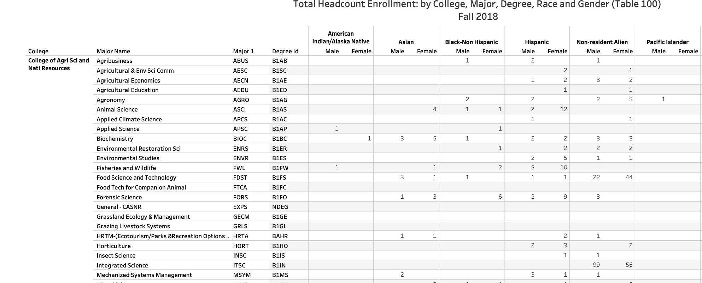

Chapter 13 Cleaning Data Part IV: PDFs
The next circle of Hell on the Dante’s Inferno of Data Journalism is the PDF. Governments everywhere love the PDF and publish all kinds of records in a PDF. The problem is a PDF isn’t a data format – it’s a middle finger, saying I’ve Got Your Accountability Right Here, Pal.
It’s so ridiculous that there’s a constellation of tools that do nothing more than try to harvest tables out of PDFs. There are online services like CometDocs where you can upload your PDF and point and click your way into an Excel file. There are mobile device apps that take a picture of a table and convert it into a spreadsheet. But one of the best is a tool called Tabula. It was build by journalists for journalists.
There is a version of Tabula that will run inside of R – a library called Tabulizer – but the truth is I’m having the hardest time installing it on my machine, which leads me to believe that trying to install it across a classroom of various machines would be disasterous. The standalone version works just fine.
Unfortunately, harvesting tables from PDFs with Tabula is an exercise in getting your hopes up, only to have them dashed. We’ll start with an example.
13.1 When it looks good, but goes wrong
Every year, the University of Nebraska-Lincoln publishes dozens of PDFs that give you interesting demographic information about students, the faculty and a variety of other things. But all of it – every little bit of it – is in a PDF. And most of them are designed to look “nice” not convey data. Even when they do very obviously look like they came from a spreadsheet – like someone printed the spreadsheet to a PDF so they could put it on the web – it doesn’t work.
A perfect example of this is the data showing the breakdown of students by degree, major, race and sex. Open it up, it looks like a spreadsheet but in a PDF.

Download and install Tabula. Tabula works much the same way as Open Refine does – it works in the browser by spinning up a small webserver in your computer.
When Tabula opens, you click browse to find the PDF on your computer somewhere, and then click import.
After it imports, click autodetect tables. You’ll see red boxes appear around what Tabula believes are the tables. You’ll see it does a pretty good job at this.

If you like what you see, click Preview and Export Extracted Data.
And here’s where it all starts to go wrong.
You’ll see at first it looks good – you get a reasonable representation of the table. But look at the first line.

First, the misspelling of college is disturbing. Did a university document misspell it? No. Which means Tabula is reading two ls as one. That’s … not good.
Second, notice how the College of Agri Sci and Natl Resources, which was in it’s own column before have been merged, somewhat inartfully, into the first column of major names. There is no major Colege of Agri Sci and Agribusiness. Same with Natl Resources Agricultural & Env Sci Comm. Those aren’t things.
Note the empty column between Major1 and DegreeId.
Now scroll down some more.

Notice Architecture has the same merging of college name and first major problems as the first one does, but note the blank column is missing.
Look at Arts and Sciences. Arts and Sciences are now in their own column, as the data shows, but there’s now empty names that shouldn’t be. What are those?
In short, it’s a mess.
Here’s the sad truth: THIS IS PRETTY GOOD. Open it in a spreadsheet and a little copying and pasting work while double checking the right names line up with the right rows and you’re in business. As converted PDFs, this isn’t bad.
It beats typing it out.
13.2 When it works well.
Each month, the Nebraska Department of Revenue releases the monthly tax receipts of the state, and forecasts into the future what tax receipts might be in the near future. They do this for planning purposes – the Legislature needs to know how much money the state may have when the new budget is put into place so they know how much money they have to spend.
The announcement comes in a press release. Each press release includes a table showing the current number, the predicted number, and difference. Of course it’s a PDF.
Let’s look at the most recent month as of this writing: January 2020. Download it, open it in Tabula and hit Autodetect tables.
You’ll note it finds no tables on the first page. Which is good, because there aren’t any. Let’s look at the third page. It finds a table, but is it one?

Let’s hit the X in the top right on that one.
That leaves page 2. It finds two tables there. Let’s just grab the first. Hit X on the second and click to preview the extracted data.
This looks good. So let’s export it to a csv.
13.3 Cleaning up the data in R
The good news is that we have data we don’t have to retype. The bad news is, it’s hardly in importable shape.
Let’s load libraries.
To import this, we need one row of headers. We have three. And we need headers that make sense.
We can spell these out in the import step. First, we’ll use skip to skip the first three lines. Then we’ll spell out the column names by hand in a col_names bit. Here’s how it looks.
## Parsed with column specification:
## cols(
## Month = col_character(),
## TotalActualNetReceipts = col_character(),
## TotalProjectedNetReceipts = col_character(),
## Difference = col_character(),
## PercentDifference = col_character(),
## CumulativeActualNetReceipts = col_character(),
## CumulativeProjectedNetReceipts = col_character(),
## CumulativeDifference = col_character(),
## CumulativePercentDifference = col_character()
## )Now we have a harder part.
The columns come in as character columns. Why? Because the state puts commas and $ and % in them, which R does not interpret as anything except text. So we need to get rid of them. We can mutate columns and use a function called gsub that finds a string and replaces it with something. So in our case, we’re going to gsub(",","", fieldname). The unfortunate part is we have a lot of colunns and a lot of fixes. So this is going to require a lot of code. It is repetitive, though, so we can copy and paste and adjust with most of it.
At the end, we need to use a function called mutate_at and convert the columns that aren’t text into numbers.
And one last thing: If we do many months of this, we should note which report this comes from. We can do this with mutate as well.
Here’s what that looks like:
receipts %>% mutate(
TotalActualNetReceipts = gsub(",","",TotalActualNetReceipts),
TotalActualNetReceipts = gsub("\\$","",TotalActualNetReceipts),
TotalProjectedNetReceipts = gsub(",","",TotalProjectedNetReceipts),
TotalProjectedNetReceipts = gsub("\\$","",TotalProjectedNetReceipts),
Difference = gsub(",","",Difference),
Difference = gsub("\\$","",Difference),
PercentDifference = gsub("\\%","",PercentDifference),
CumulativeActualNetReceipts = gsub(",","",CumulativeActualNetReceipts),
CumulativeActualNetReceipts = gsub("\\$","",CumulativeActualNetReceipts),
CumulativeProjectedNetReceipts = gsub(",","",CumulativeProjectedNetReceipts),
CumulativeProjectedNetReceipts = gsub("\\$","",CumulativeProjectedNetReceipts),
CumulativeDifference = gsub(",","",CumulativeDifference),
CumulativeDifference = gsub("\\$","",CumulativeDifference),
CumulativePercentDifference = gsub("\\%","",CumulativePercentDifference)
) %>% mutate_at(vars(-Month), as.numeric) %>% mutate(ReportMonth = "January 2020")## # A tibble: 7 x 10
## Month TotalActualNetR… TotalProjectedN… Difference PercentDifferen…
## <chr> <dbl> <dbl> <dbl> <dbl>
## 1 July 284883132 271473079 13410054 4.9
## 2 Augu… 462019974 440504016 21515958 4.9
## 3 Sept… 551908013 510286143 41621870 8.2
## 4 Octo… 289723434 266204529 23518905 8.8
## 5 Nove… 431787603 404934524 26853079 6.6
## 6 Dece… 472926836 421455999 51470837 12.2
## 7 Janu… 467698460 412661036 55037424 13.3
## # … with 5 more variables: CumulativeActualNetReceipts <dbl>,
## # CumulativeProjectedNetReceipts <dbl>, CumulativeDifference <dbl>,
## # CumulativePercentDifference <dbl>, ReportMonth <chr>We can now reuse this with other months after we harvest the data out of it.